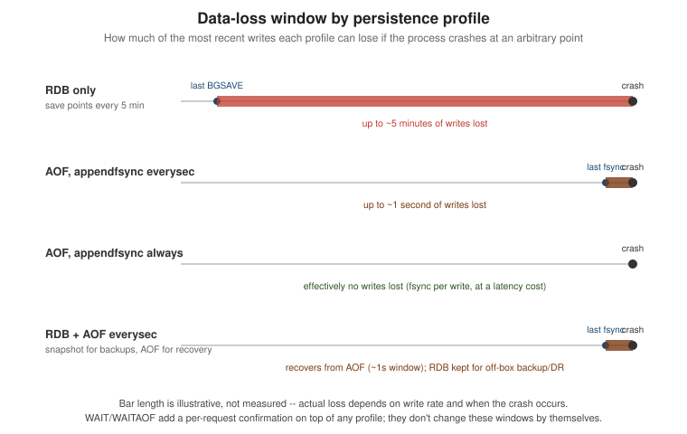

Persistence, Durability & Redis as a Primary Database
|
This content was generated with the assistance of AI and should be verified against the official documentation before being relied on in production. |
Examples on this page target Redis Open Source 8.10 (8.10.2) with the Jedis 8 and Lettuce 7.7 client libraries.
It covers the two on-disk persistence mechanisms Redis offers — RDB snapshots and the append-only file (AOF) — how they combine, the WAIT/WAITAOF commands for making a write’s durability observable before replying
to a caller, the Redis 8.10 BACKUP command family for taking a consistent backup without stopping writes, and
what changes when Redis is asked to be a primary database rather than only a cache in front of one.
RDB: point-in-time snapshots
RDB persistence writes the whole dataset to a single compact binary file (dump.rdb by default) at
configured save points — combinations of an elapsed time and a minimum number of changes, any one of which
triggers a snapshot. save "" disables automatic snapshotting entirely, leaving only manually triggered
snapshots (or none, for a pure cache with no persistence at all).
# redis.conf -- save a snapshot if at least 1 key changed in 900s,
# or at least 10 keys changed in 300s, or at least 10000 keys changed in 60s
save 900 1
save 300 10
save 60 10000SAVE writes a snapshot synchronously on the command-executing thread, blocking every other client for the
whole write — essentially never what you want against a live instance. BGSAVE instead forks the process:
the child writes the new RDB file from its own copy-on-write view of memory while the parent keeps serving
commands on the original thread, and the new file atomically replaces the old one only once it is complete.
Because both save points and an explicit BGSAVE share this fork step, a very large dataset can still make
fork() itself take long enough to be felt as a latency spike on the parent, even though the child’s write
never blocks it.
127.0.0.1:6379> BGSAVE
Background saving started
127.0.0.1:6379> INFO persistence
# Persistence
rdb_changes_since_last_save:0
rdb_bgsave_in_progress:0
rdb_last_bgsave_status:ok
rdb_last_bgsave_time_sec:0RDB’s data-loss window is bounded by the interval between save points, not by any single command: whatever was written since the last completed snapshot is lost if the process dies before the next one, which is why RDB alone suits data that can tolerate losing the last few minutes far better than it suits a system of record. See BGSAVE and Redis persistence.
AOF: logging every write
The append-only file instead logs every write command as it happens, in the same wire format Redis itself
speaks, and rebuilds the dataset by replaying that log on startup. It is off by default and turned on with
appendonly yes.
# redis.conf
appendonly yes
appendfsync everysecappendfsync controls how often the AOF is actually flushed and `fsync`ed to disk, independently of how often
commands are appended to it in memory:
| Value | Behaviour |
|---|---|
|
|
|
|
|
Never calls |
Since Redis 7.0, the AOF is multi-part: instead of one growing file, a base file (an RDB- or AOF-format
snapshot of the dataset at the time of the last rewrite) and one or more incremental files live together in a
directory (appenddirname, default appendonlydir), tracked by a manifest file that records which base and
increment files currently make up the log. BGREWRITEAOF compacts the log the same way BGSAVE compacts a
snapshot: it forks, the child writes a fresh base file containing only the minimal set of commands needed to
reach the current dataset, the parent keeps appending new writes to a new increment file in the meantime, and
the two are atomically swapped in via the manifest once the child finishes — so a rewrite never blocks
writes and never risks losing data written during it.
127.0.0.1:6379> BGREWRITEAOF
Background append only file rewriting started
127.0.0.1:6379> INFO persistence
# Persistence
aof_enabled:1
aof_rewrite_in_progress:0
aof_last_bgrewrite_status:ok
aof_base_size:1231000
aof_current_size:1231512See BGREWRITEAOF and Redis persistence for the full multi-part AOF format and rewrite mechanics.
RDB and AOF together
The two are not mutually exclusive: save points and appendonly yes can both be configured on the same
instance, and Redis restarts from whichever one is more complete. With both enabled, a restart always loads
the AOF, never the RDB file, since the AOF is guaranteed to be the more up-to-date of the two — the RDB file
is then kept around for what it is genuinely good at: a compact, fast-to-restore point-in-time copy for
off-box backups and disaster recovery, rather than the mechanism a restart actually relies on. Redis also
avoids running an RDB save and an AOF rewrite at the same time, since both fork and both drive heavy disk
I/O; whichever is requested second while the other is in progress is deferred until the first completes.
# redis.conf -- both mechanisms enabled
save 900 1
appendonly yes
appendfsync everysecThis combination is the closest Redis gets to the durability profile of a traditional relational database: snapshotting for cheap, restorable backups, AOF for sub-second recovery-point durability on restart. See Redis persistence ("Interactions between AOF and RDB persistence").
WAIT and WAITAOF: making durability observable
Both appendfsync everysec and asynchronous replication mean a command can reply OK to the client before
the write it represents is actually durable anywhere but the primary’s memory. WAIT and WAITAOF let a
caller block until a specific durability target is actually met, turning an implicit guarantee into one the
application can check before, say, telling a customer their order succeeded.
WAIT numreplicas timeout blocks until at least numreplicas connected replicas have acknowledged having
received and applied all write commands issued by the calling connection so far, or until timeout
milliseconds pass (0 blocks forever); it says nothing about whether any of those replicas has actually
fsynced the data to disk, only that they have it in memory.
127.0.0.1:6379> SET bookshop:cart:42 "..."
OK
127.0.0.1:6379> WAIT 1 2000
(integer) 1WAITAOF numlocal numreplicas timeout is the disk-durability counterpart: it blocks until numlocal local
fsyncs (0 or 1, since a single instance has only one local AOF) and numreplicas replica fsyncs have
happened for every write issued by the connection so far, and returns the actual counts reached whether or
not the targets were met before timeout. It requires AOF to be enabled wherever a local fsync is being
waited on — asking for numlocal 1 against an instance with appendonly no fails outright, since there is
no local AOF to fsync.
127.0.0.1:6379> SET bookshop:cart:42 "..."
OK
127.0.0.1:6379> WAITAOF 1 1 2000
1) (integer) 1
2) (integer) 1BACKUP: online backups without stopping writes
New in Redis 8.10, the BACKUP command family produces a self-contained, restorable backup while the
instance keeps serving writes, without the operator having to hand-manage AOF rewrites or coordinate around
BGSAVE. A backup is itself a multi-part-AOF-shaped artifact: a BASE snapshot, an INCR file of writes
accumulated since, and a manifest tying the two together, all hard-linked into a dedicated backup directory
(backupdirname, default backupdir, resolved under the server’s working directory dir) rather than
copied, so opening the backup window costs no extra disk I/O up front.
| Subcommand | Effect |
|---|---|
|
Opens a backup window and produces a fresh BASE snapshot via an AOF rewrite, reusing the
existing multi-part AOF if one is already running, or temporarily starting the AOF machinery (without
changing the configured |
|
Returns the absolute paths of the immutable backup files pinned so far — just the BASE while a backup is still accumulating INCR data, then BASE, INCR and manifest once sealed. |
|
Freezes the backup: flushes and fsyncs the INCR file, hard-links it alongside the BASE, and writes the standalone manifest. After this point the file set is complete and immutable. |
|
Reports the current state of the backup state machine ( |
|
Removes the sealed backup’s files (once they have been safely copied elsewhere) and
returns the state machine to |
|
Cancels a backup that has not been sealed yet. |
A typical backup, taken and shipped off-box, looks like this against a single node:
127.0.0.1:6379> BACKUP START
OK
127.0.0.1:6379> BACKUP STATUS
1) "state"
2) "incrementing"
127.0.0.1:6379> BACKUP LIST
1) "/data/backupdir/appendonly.aof.1.base.rdb"
127.0.0.1:6379> BACKUP SEAL
OK
127.0.0.1:6379> BACKUP LIST
1) "/data/backupdir/appendonly.aof.1.base.rdb"
2) "/data/backupdir/appendonly.aof.1.incr.aof"
3) "/data/backupdir/appendonly.aof.manifest"After copying the three files reported by BACKUP LIST to durable off-box storage, BACKUP CLEANUP releases
them from the backup directory. Because starting a backup is decoupled from sealing it, a control plane
managing several Bookshop shards can stagger BACKUP START across nodes so they don’t all fork at once, let
each accumulate INCR data independently, then seal and copy each in turn.
Restoring is a startup-time operation driven by the preload-file configuration setting, given as
<type>:<path> where <type> is aof or rdb. Pointed at a sealed backup’s manifest, it loads exactly that
BASE+INCR file set — reflecting the dataset as of the BACKUP SEAL call, not merely the earlier
BACKUP START snapshot — instead of the server’s normally configured appenddirname/dump.rdb:
# redis.conf, on the instance being restored
preload-file aof:/data/backupdir/appendonly.aof.manifest$ redis-server /path/to/redis.conf
* Loading RDB base file from preload-file...
* Loading AOF increments from preload-file...
* Done loadingpreload-file can equally point at a lone RDB file (preload-file rdb:/path/to/backup.rdb) for a plain
snapshot restore. See BACKUP START,
BACKUP SEAL, and
Redis persistence ("Online
backups with the BACKUP command family") for the full state machine and restore procedure.
The data-loss window, profile by profile
No persistence at all loses everything on any unclean stop — appropriate only for data that is purely
derived or cache, never for anything Bookshop treats as a system of record. RDB alone bounds the loss window
to the gap between the last completed save point and the crash, typically minutes with a realistic save
schedule; a snapshot every five minutes means up to five minutes of writes can vanish. appendfsync everysec
narrows that to about one second, at write latency close to RDB’s, which is why it’s the default and the
right starting point for most workloads that care about durability at all. appendfsync always narrows it
further, to essentially nothing beyond the write itself, at the cost of an fsync round trip on (batches of)
every write — a real latency tax, not a free upgrade. RDB and AOF together inherit AOF’s tighter restart
recovery point while keeping RDB’s cheap, portable snapshots for backup and disaster recovery, so the two
address different failure scenarios rather than duplicating the same one. WAIT/WAITAOF don’t change any
of these windows on their own; they let a caller confirm, for one specific write, that a chosen durability
target was actually reached before treating that write as safe — turning a statistical guarantee into a
per-request check where it matters enough to pay the latency for it.

Redis as a primary database
Redis is increasingly used as a system of record in its own right — not only a cache in front of one — and that shift changes which guarantees actually matter.
BASE, not ACID
A relational database’s ACID transaction gives atomicity, consistency, isolation and durability across an arbitrary set of statements, enforced by the engine itself. Redis instead sits closer to the BASE model (Basically Available, Soft state, Eventual consistency) that distributed key-value and document stores generally favor: high availability and low latency are prioritized, and strict cross-key consistency is something the application layer opts into rather than gets by default.
What Redis does give you: every single command is atomic, because the single-threaded execution model means
no other command can interleave with it. MULTI/EXEC queues several commands and executes them back to
back with nothing else interleaved — atomic in the sense that nothing runs between them — but it is not
ROLLBACK-capable: a command that fails at execution time (a type error, for instance) does not undo the
commands before it in the same transaction, unlike a relational ROLLBACK on constraint violation. Lua
scripts and Redis Functions extend the same single-threaded atomicity to arbitrary read-modify-write logic
spanning several keys, which is the usual way to get transaction-like behavior beyond what MULTI/EXEC
alone provides. There is no isolation level to choose and no concept of a dirty read across keys the way a
relational engine defines one — reads simply see whatever the last completed atomic operation left behind.
The latency cost of durability knobs
Every durability guarantee above this line is paid for in latency, and running Redis as a primary database means deciding, per write path, how much of that cost is worth paying:
| Knob | Cost |
|---|---|
|
An |
|
Blocks the calling connection until the target fsync/replica counts are met, adding however long that takes on top of the write itself — pay it selectively, for writes that actually need the confirmation, not on every write. |
|
Rejects writes outright once fewer than the configured number of replicas are known connected and within the configured lag, trading write availability for a floor on how far a failover can silently lose data — not a latency cost on the happy path, but an availability one when replicas fall behind or drop. |
A workable default is to run most writes at appendfsync everysec for throughput, and reach for WAITAOF (or
WAIT against replicas, if AOF durability alone isn’t the concern) only on the specific write paths — an
order confirmation, a payment record — where the extra latency is worth the tighter durability guarantee.
Consistency under failover
Redis replication is asynchronous by default: a primary acknowledges a write before any replica has applied
it, which means a failover triggered right after such a write can promote a replica that never received it,
silently losing it. min-replicas-to-write narrows, but does not eliminate, this window by refusing writes
once too few replicas are keeping up, and WAIT/WAITAOF narrow it further still for the specific writes a
caller chooses to confirm — but neither turns Redis replication into the synchronous, quorum-committed
replication a distributed relational or consensus-based store provides by default. Sentinel and Cluster
failover both pick a promotion candidate from the replicas available at that moment, not necessarily the one
with the most recent data if replicas are lagging unevenly; see
Replication, Sentinel & Cluster for how a
promotion is actually chosen.
Modelling a primary store with JSON and the Query Engine
Used as a primary store, Bookshop’s bookshop:book:<isbn> documents are the natural fit: each book is a JSON
document under a stable key, and the Query Engine’s idx:books index (built with FT.CREATE over
bookshop:book:*) gives it the secondary-index and query capability a relational primary store would get
from ordinary WHERE/ORDER BY clauses — filtering by genre or price range, faceted counts, full-text
search over the title — without a separate database to keep in sync. This works well for the access patterns
the index actually covers; it does not give Redis a query planner or ad hoc join capability comparable to a
relational engine, so a Bookshop feature that needs arbitrary multi-entity joins is still better served by a
relational store, whether alone or alongside Redis.
When to pair Redis with a system of record
Redis earns its place as the sole store for data whose value comes from low-latency, high-throughput access and whose consistency needs are met by per-command and per-transaction atomicity — a cart, a session, a rate limiter, a leaderboard. It is a weaker fit as the only store for data that needs multi-entity transactional integrity beyond what Lua/Functions conveniently express, long-term analytical querying, or regulatory retention and audit guarantees a relational engine’s tooling already covers. The common pattern in that case is not "Redis instead of a relational database" but Redis in front of one — a cache, a read-optimized JSON/Query-Engine projection, or a fast path for the subset of operations that genuinely need Redis’s latency profile — with the relational store remaining the system of record for everything else. See Choosing the Right Database for the general framework behind that decision, including when a second engine is worth its operational cost at all.
Related pages
-
Architecture, Keyspace & Eviction — the single-threaded execution model that underlies command-level atomicity, and
maxmemory-policy(relevant to why eviction and persistence pull in opposite directions on a primary-store instance). -
Replication, Sentinel & Cluster — how replicas, Sentinel, and Cluster failover actually pick and promote a replica, referenced above.
-
JSON — the JSON document type behind
bookshop:book:<isbn>. -
Query Engine: Indexing & Data Modeling — the
idx:booksindex used for secondary-index-style querying over JSON documents. -
Choosing the Right Database — the general framework for picking a database category and deciding when to pair a specialized store with a system of record.
References
-
Redis persistence — RDB, AOF, multi-part AOF, RDB/AOF interaction, and the BACKUP command family overview.